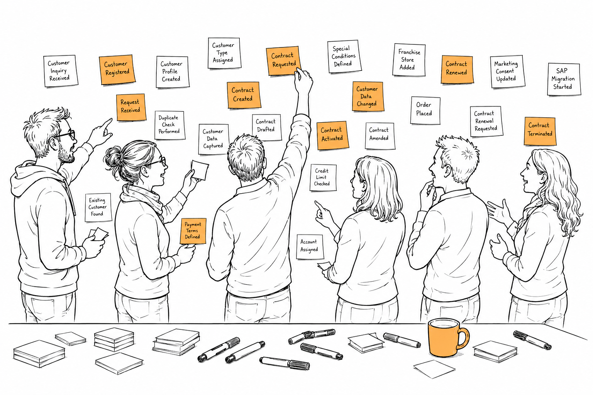

3 From Conversations to Models

The car rental project fundamentally changed how I approached software projects.
I no longer believed that shared understanding could emerge from requirements documents, no matter how detailed they were. If software engineering was really about creating and maintaining shared understanding, then I had to work directly with the people who understood the business. There was simply no shortcut.
The next opportunity came almost immediately.
I joined a project at a well-known fashion manufacturer. They had started a multi-year SAP migration to replace their home-grown ERP system. If you’ve ever been involved in an ERP migration, you know these projects are expensive. Not just because of the software licenses, but because every decision suddenly becomes strategic. Processes that had evolved over decades have to fit into a standardized system. Every exception costs money. Every customization becomes another long-term commitment.
My team was responsible for digital contracts.
Initially, that sounded like a fairly isolated problem. But the more we looked into it, the more obvious it became that contracts and customer master data couldn’t be separated. A strategic decision was made to put our service between the existing ERP and the future SAP system. We became a kind of customer hub that would shield the rest of the landscape from the migration.
Looking back, that’s interesting because our biggest challenge wasn’t technical.
It was organizational.
Our team consisted of six people. Two developers, two business analysts and two domain experts from the customer master data department.
That composition was no accident.
The domain experts understood how customer data was managed today and how it would have to look in the future. The business analysts understood the business processes and documented our decisions. We developers were responsible for turning all of that into software.
So we met almost every day and our meetings weren’t status updates. We rarely went around the virtual table asking everyone what they had done yesterday.
We usually started with whatever blocked us most.
Someone from the customer master data team had discovered another special contract that didn’t fit into the new structure. One of the business analysts had found a condition that looked contradictory. We developers had questions about the API we were designing because we suddenly realized that two different customer types looked identical until you considered how contracts were managed.
Looking back, it’s almost funny how much time we spent asking questions.
On many projects, questions are considered a problem. They indicate that requirements are incomplete or that somebody forgot to document something.
We experienced the exact opposite. The questions were doing the work.
I still remember reading requirements on earlier projects. Every now and then I’d stumble across something that felt odd. Maybe a business term I didn’t understand. Maybe an exception that wasn’t explained. Or simply a sentence where I thought: That can’t be the whole story.
Of course I could ask. But asking wasn’t free. It usually meant writing an email or creating a ticket. Somebody had to find time to answer. Sometimes the answer created two new questions. Before long you were playing ping-pong with whoever had written the document.
So you start making assumptions. And I don’t think anyone does this consciously. It’s just the cheapest option.
Our daily collaboration felt completely different. Questions didn’t interrupt the work. They were the work.
If one of our business analysts wasn’t sure how a particular contract should be represented in the new structure, we discussed it. If one of us developers realized that an API decision suddenly affected contract management, we discussed it. If the domain experts remembered another customer segment with special rules, we discussed it.
Nobody had to think twice before asking. Looking back, I think that’s what made the biggest difference.
With direct collaboration, the cost of curiosity is almost zero.
That’s an interesting observation because it has nothing to do with software. It has everything to do with how humans learn together.
The cheaper it is to ask a question, the more questions get asked. The more questions get asked, the more hidden assumptions become visible. And hidden assumptions are usually where misunderstandings live.
At the time I didn’t think about it in those terms. We were simply trying to solve a difficult business problem. It took me years to realize that we weren’t just building software. We were slowly building a shared understanding of the business. And that shared understanding didn’t emerge because someone had documented everything up front. It emerged because six people kept challenging, refining and extending each other’s mental models every single day.
The more we collaborated, the more another problem became obvious. Conversations are great while you’re having them. The moment they’re over, they start fading away.
Sometimes we ended a meeting convinced that we had found a great solution. Two days later one of us remembered another detail.
“Didn’t we decide to handle this differently?”
“No, I think that was only true for new contracts.”
“Wait, what about franchise stores?”
Nobody was wrong. We simply remembered different parts of the same conversation.
You can probably relate to this. We’ve all left a meeting thinking that everyone agreed, only to discover a week later that everyone had agreed on something slightly different.
It’s not necessarily a communication problem. conversations disappear over time.
Our business analysts documented a lot of what we discussed in the company wiki. That certainly helped. Without them we would have lost many important decisions. But over time I noticed something interesting.
The wiki answered questions we already knew to ask. It didn’t help us discover the questions we hadn’t thought about yet. That’s a subtle but important difference.
When you read a document, you’re following the author’s train of thought. You can stop, go back, or look something up, but you’re still consuming information that someone else has structured for you.
Our discussions didn’t work like that. We weren’t trying to explain something that already existed. We were trying to discover it together. That requires a different kind of artifact.
At the time I couldn’t have explained it like that. I just felt that writing down meeting minutes wasn’t enough. The really valuable part wasn’t the conversation itself. It was what the conversation produced.
We needed something we could build together. Not afterwards. While we were talking.
Around that time, I learned about Event Storming.
I was immediately curious because it addressed exactly the problem we were experiencing. We had a team that collaborated closely, but we still struggled with the same fundamental challenge: how do we preserve what we discover together?
The first thing that caught my attention was that Event Storming was not about documenting knowledge that already existed. It was about discovering knowledge together.
This was an important difference.
When we had discussions about customer master data or contract structures, everybody brought their own perspective into the room. The domain experts knew the business rules and all the exceptions that had accumulated over the years. The business analysts understood the processes and dependencies. We developers understood the technical implications.
Everybody knew a different part of the system. The challenge was not that information was missing. The challenge was that the complete picture only existed when we combined all these perspectives.
Event Storming gave us a glimpse of a different way of working together.
Instead of one person explaining something to the rest of the team, everybody became part of creating the model. The discussion was happening around something visible that evolved while we were talking.
That changed the dynamic.
When someone raised a question, we didn’t just answer it verbally and move on. We had to decide how this new insight changed our model.
When someone disagreed, the disagreement became visible. We could look at it together and understand why our perspectives were different.
This was a very different experience from the meetings I had participated in before.
A meeting usually has a speaker and an audience. Even when everybody is invited to participate, there are often active and passive participants.
Collaborative modeling changes that.
The model becomes something the entire group creates. Everyone contributes, challenges, moves things around and helps shape the result.
The energy of the group starts to build on itself.
One person’s question triggers another person’s memory. Another person’s observation reveals a connection that nobody had considered before.
The group becomes much more than the sum of the individual people in the room.
At that time, I didn’t have the words for it, but I think this was the first time I experienced what true collaborative modeling can create.
The model was not the result of the conversation.
The model was the conversation.